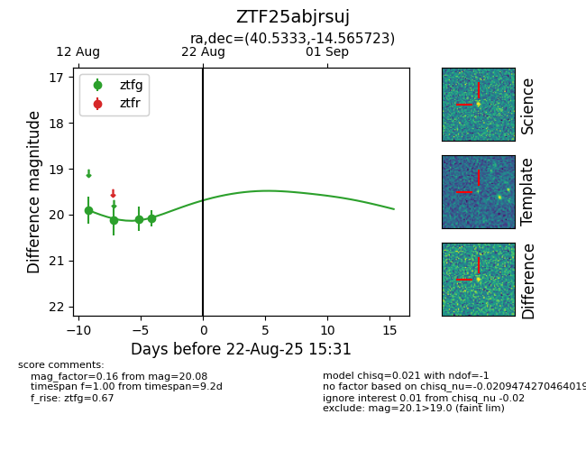

Target ZTF25abjrsuj at 2025-08-22 16:16, see:
FINK: fink-portal.org/ZTF25abjrsuj
Lasair: lasair-ztf.lsst.ac.uk/objects/ZTF25abjrsuj
ALeRCE: alerce.online/object/ZTF25abjrsuj
alt names
ZTF25abjrsuj (ztf,alerce)
coordinates:
equatorial (ra, dec) = (40.5333,-14.56572)
galactic (l, b) = (192.5490,-61.34484)
photometry
last ztfg=20.08
4 ztfg detections
